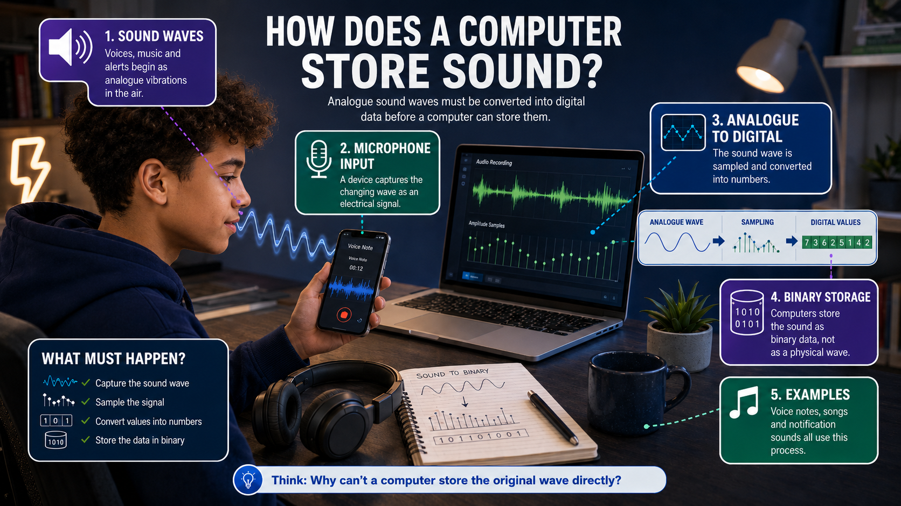
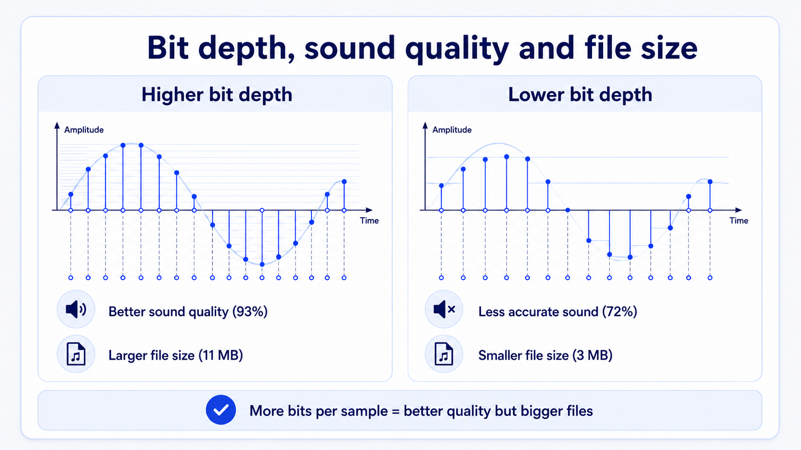
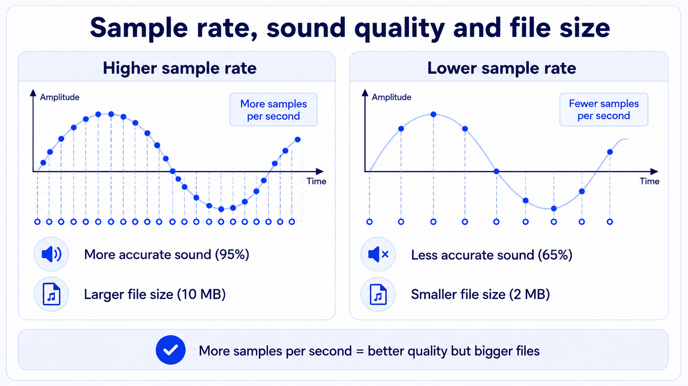
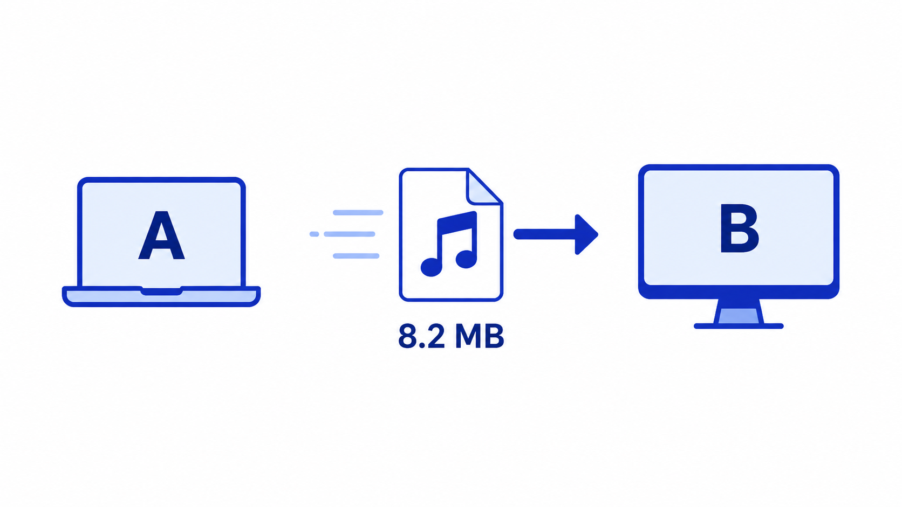

Every second, your phone, laptop or headphones turns invisible vibrations in the air into numbers a computer can store. A voice note, a song and a notification sound all begin as analogue waves, but computers cannot store waves directly. They must turn sound into binary. In this lesson, you will learn how that conversion happens and why changing the settings can improve sound quality but increase file size.
1.2.10 Sound
Introduction

1.2.10 Sound
Learning objectives
By the end of this lesson, you should be able to:
Describe how analogue sound is stored in digital form.
Explain the purpose of an Analog-to-Digital Converter.
Describe what a sound sample is.
Explain how sample rate and bit depth affect sound quality and file size.
Calculate sound file size using sample rate, duration and bit depth.
Part 1 - What is Sound?
Part 1 - What is Sound?
Understanding sound
Sound is made when something vibrates. These vibrations travel through the air as waves. A microphone can detect these waves, but a computer cannot store the original analogue wave directly. To store sound, the computer must represent the sound wave using binary values.
Part 1 - What is Sound?
Sound wave
The wave shows how sound changes over time. Higher points on the wave represent stronger vibrations. Lower points represent weaker vibrations. The computer needs to capture enough information from this wave to recreate the sound later.
Part 1 - What is Sound?
Analog-to-Digital Converter (ADC)
An Analog-to-Digital Converter, or ADC, changes analogue sound into digital data. The ADC measures the sound wave at regular intervals and converts each measurement into a binary value. This allows the sound to be stored, processed and played back by a computer.
Analogue
sound wave
sound wave
ADC
Binary
values
values
Part 1 - What is Sound?
Analog-to-Digital Converter (ADC)
The visual shows the ADC taking measurements from the analogue wave and turning each measurement into a binary value. The smooth wave becomes a set of separate digital values that the computer can store.
Part 1 - What is Sound?
Multiple Choice Questions
Questions - Select the correct option for each question. (3 marks)
Q1What causes sound?
Choose an option.
Q2Why must sound be converted before a computer can store it?
Choose an option.
Q3What is the purpose of an ADC?
Choose an option.
Part 2 - What is a Sound sample?
Part 2 - What is a Sound sample?
What is a Sound sample?
A sound sample is one measurement taken from a sound wave at a specific point in time. To store sound digitally, the computer takes many samples from the wave. Each sample is stored as a binary value. More samples can give a more accurate copy of the original sound.
Part 2 - What is a Sound sample?
Sound sampling
The diagram shows a sound wave being measured at regular points. Each point is a sample. The computer stores the height of each sample as a binary value so the sound can be recreated later.
Part 2 - What is a Sound sample?
Multiple Choice Questions
Questions - Select the correct option for each question. (3 marks)
Q4What is a sound sample?
Choose an option.
Q5What is stored for each sample?
Choose an option.
Q6Why are many samples needed?
Choose an option.
Part 3 - What is Sample bit depth?
Part 3 - What is Sample bit depth?
What is sample bit depth?
Sample bit depth is the number of bits used to store each sound sample. More bits allow more possible values for each sample. This means the computer can store the height of the sound wave more accurately.
00 01 10 11
Few possible heights, so the stored value is rough.
000 ... 111
More heights are available, so the sample can be closer.
0000 ... 1111
Even more heights are available, so the stored wave is more accurate.
Part 3 - What is Sample bit depth?
Understanding bit depth
The graph shows how sample measurements are matched to binary values. With a low bit depth, there are fewer possible values, so the measurement is less precise. With a higher bit depth, there are more possible values, so the sound can be stored more accurately.
3 bits = 8 amplitude levels
18 samples x 3 bits = 54 bits
4 bits = 16 amplitude levels
18 samples x 4 bits = 72 bits
The 4-bit version has more amplitude levels, so the stepped digital wave can follow the original wave more closely. The trade-off is that every sample uses more bits, so the file size increases.
Part 3 - What is Sample bit depth?
Why the number of bits matters
The number of bits matters because it controls how many different values can be used to store each sound sample. Each extra bit gives the computer more possible levels for the wave height, so an 8-bit sample can store many more values than a 1-bit or 2-bit sample. More possible values means the digital sound can be a more accurate copy of the original wave.
| Bits per sample | Possible amplitude levels |
|---|---|
| 1 bit | 2 levels |
| 2 bits | 4 levels |
| 3 bits | 8 levels |
| 4 bits | 16 levels |
| 8 bits | 256 levels |
| 16 bits | 65,536 levels |
Part 3 - What is Sample bit depth?
The relationship between bit depth, sound quality and file size
Increasing bit depth usually improves sound quality because each sample can be stored more accurately. However, it also increases file size because more bits are stored for every sample. Lower bit depth gives a smaller file, but the sound may be less accurate.

Part 3 - What is Sample bit depth?
Exam questions
Part 4 - What is sample rate?
Part 4 - What is sample rate?
What is sample rate?
Sample rate is the number of sound samples taken every second. It is measured in Hertz, written as Hz. A sample rate of 44,100 Hz means 44,100 samples are taken every second.
Part 4 - What is sample rate?
Sample rate
The visual compares a low sample rate with a high sample rate. The low sample rate takes fewer measurements, so it misses more detail from the wave. The high sample rate takes more measurements, so it can recreate the original wave more accurately.
Part 4 - What is sample rate?
The relationship between sample rate, sound quality and file size
Increasing sample rate usually improves sound quality because more measurements are taken every second. However, it also increases file size because more sample values must be stored. A lower sample rate gives a smaller file, but the sound may lose detail.

Part 4 - What is sample rate?
The relationship between sample rate, sound quality and file size
The visual shows that as sample rate increases, the digital version follows the original wave more closely. It also shows that more samples per second means more data is stored.
Low sample rate
3 samples per second
Big gaps mean more of the wave shape is missed.
File size
Medium sample rate
6 samples per second
More measurements capture more detail from the wave.
File size
High sample rate
12 samples per second
The digital copy follows the original wave much more closely.
File size
Higher sample rate means more measurements every second. That can improve sound quality, but every extra measurement has to be stored.
Part 4 - What is sample rate?
Exam questions
Part 5 - How to calculate Sound file size
Part 5 - How to calculate Sound file size
What is file size and why is it important?
File size is the amount of storage space needed to store a file. Sound files can become large because they may contain thousands of samples every second, and each sample uses several bits. File size matters because larger files take more storage space and may take longer to transfer.

Part 5 - How to calculate Sound file size
How to calculate Sound file size
Sound file size in bits can be calculated using sample rate x duration in seconds x bit depth. Sample rate is the number of samples per second. Duration is how many seconds the audio lasts. Bit depth is the number of bits used for each sample.
sound file size = sample rate x duration (s) x bit depth
Part 5 - How to calculate Sound file size
Sound file size calculation 1
A sound file has a sample rate of 8,000 Hz, a duration of 10 seconds and a bit depth of 8 bits.
- Formula: sample rate x duration x bit depth.
- Substitute the values: 8,000 x 10 x 8.
- Multiply: 8,000 x 10 x 8 = 640,000 bits.
- Convert to bytes: 640,000 / 8 = 80,000 bytes.
Part 5 - How to calculate Sound file size
Sound file size calculation 2
A sound file has a sample rate of 44,100 Hz, a duration of 5 seconds and a bit depth of 16 bits.
- Formula: sample rate x duration x bit depth.
- Substitute the values: 44,100 x 5 x 16.
- Multiply: 44,100 x 5 x 16 = 3,528,000 bits.
- Convert to bytes: 3,528,000 / 8 = 441,000 bytes.
Part 5 - How to calculate Sound file size
Sound file size calculation 3
A sound file has a sample rate of 22,050 Hz, a duration of 20 seconds and a bit depth of 8 bits.
- Formula: sample rate x duration x bit depth.
- Substitute the values: 22,050 x 20 x 8.
- Multiply: 22,050 x 20 x 8 = 3,528,000 bits.
- Convert to bytes: 3,528,000 / 8 = 441,000 bytes.
Part 5 - How to calculate Sound file size
Exam questions
Lesson Summary
Lesson Summary
In this lesson, you covered how analogue sound is converted into digital data, the role of an Analog-to-Digital Converter, what sound samples are, how bit depth affects accuracy and file size, how sample rate affects quality and file size, and how to calculate sound file size using sample rate, duration and bit depth.
End of lesson